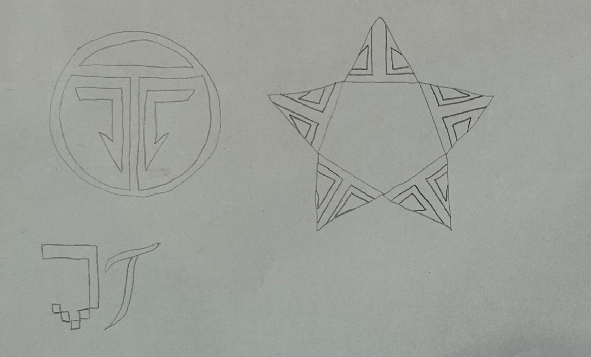

For this logo, I wanted to bring together two important sides of who I am. The pixelated blocks represent my background in coding—structured, logical, and precise—while the flowing calligraphy curves reflect my creative and artistic side. By combining these two styles, the logo tells the story of how my technical skills and passion for design come together in harmony. It’s a simple yet meaningful design that showcases the unique blend of logic and creativity that defines both me and my work.
To develop my logo, I started by exploring several concepts combining my initials "JT" with different visual styles. The sketches include geometric shapes and pixel-inspired forms representing the blend of structure and creativity I wanted to convey. Among these, the bottom left sketch featuring pixel-like blocks paired with a flowing stroke stood out. It felt simpler, clearer, and best captured the balance between my technical coding background and artistic side. After choosing this concept, I refined it digitally, focusing on clean lines and spacing to achieve a professional and distinctive final logo.
